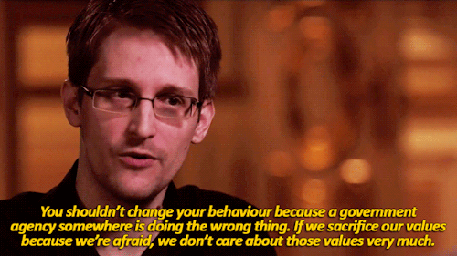

<!doctype html>
<html lang="en">

  <head>
    <meta charset="utf-8">

    <title>Computers broke Privacy, but we have enough duct tape - Computer Ethics Talk</title>

    <meta name="description" content="A short digression on how tech enabled mass surveillance, and what can we do to fix this.">
    <meta name="author" content="Fabrizio Ferrai">

    <meta name="apple-mobile-web-app-capable" content="yes" />
    <meta name="apple-mobile-web-app-status-bar-style" content="black-translucent" />

    <meta name="viewport" content="width=device-width, initial-scale=1.0, maximum-scale=1.0, user-scalable=no, minimal-ui">

    <link rel="stylesheet" href="../reveal.js/css/reveal.css">
    <link rel="stylesheet" href="../reveal.js/css/theme/night.css" id="theme">

    <!-- Printing and PDF exports -->
    <script>
      var link = document.createElement( 'link' );
      link.rel = 'stylesheet';
      link.type = 'text/css';
      link.href = window.location.search.match( /print-pdf/gi ) ? '../reveal.js/css/print/pdf.css' : '../reveal.js/css/print/paper.css';
      document.getElementsByTagName( 'head' )[0].appendChild( link );
    </script>

    <!--[if lt IE 9]>
    <script src="../reveal.js/lib/js/html5shiv.js"></script>
    <![endif]-->

    <!-- For syntax highlighting -->
	<link rel="stylesheet" href="../reveal.js/highlight.js/src/styles/solarized-light.css" id="highlight-theme">
	<link rel="stylesheet" href="http://maxcdn.bootstrapcdn.com/font-awesome/4.3.0/css/font-awesome.min.css">
  </head>

  <style type="text/css">
  .reveal pre code {
    color: #3f3f3f;
    background: #eee none repeat scroll 0% 0%;
    font-size: 1.5em;
    line-height: 1.4em;
    border-radius: .2em;
  }

  .fa {
  	margin-right: 1em;
  }
  </style>

  <body>
    <div class="reveal">
      <!-- Any section element inside of this container is displayed as a slide -->
      <div class="slides">
        <!-- Slides are separated by newline + three dashes + newline, vertical slides identical but two dashes -->
			<section data-markdown data-separator="^\n---\n$"
			         data-separator-vertical="^\n--\n$">
				<script type="text/template">

## Computers broke Privacy
### but we have enough duct tape

<br><br>

#### Computer Ethics Talk


---

<!-- .slide: data-background="#333333" -->


<h3> Fabrizio Ferrai</h3>
<h4> <i class="fa fa-globe"></i> [ferrai.io](https://ferrai.io) </h4>
<h4> <i class="fa fa-twitter"></i> [@fabferrai](https://twitter.com/fabferrai) </h4>
<h4> <i class="fa fa-facebook"></i> [fabrizio.ferrai](https://www.facebook.com/fabrizio.ferrai) </h4>
<h4> <i class="fa fa-envelope"></i> [fabrizio@ferrai.io](mailto:fabrizio@ferrai.io) </h4>

---

# Index

- Why is that?
- Should we worry?
- How to fix?

---

# Why Privacy is broken

--

<!-- .slide: data-background="#005b78" -->

## `#define privacy`

<br>

> is the ability of an individual or group to seclude themselves, or information about themselves, and thereby express themselves selectively. (wikipedia)

<br>
### In general, the option to conceal any information from others.

--

## A modern concept

<br>

- **Aristotle**: two spheres of life: *polis* and *oikos*
- **1890**: S. Warren and L. Brandeis: the “right to be let alone”

<br>

Subtle distinction between privacy and secrecy, most languages didn't even have a specific word (e.g. Italian)

> When I withhold information, it is **privacy**; when you withhold information, it is **secrecy**.

<br>

### Before computers, it was easier.

--

## Computing revolution

- [It's happening](http://web.cs.ucdavis.edu/~rogaway/classes/188/spring06/papers/moor.html)
- As every revolution, [it changes the base values](https://en.wikipedia.org/wiki/Right_to_Internet_access)
- Affordance, newness, availability aren't enough. The enabling element is logical malleability.
- But issues...

--

## The Invisibility Factor

**Important fact**: most of the time computer operations are invisible, and this generate policy vacuums about computer tech, or a different perception of values.

--

## Three kinds of Invisibility

1. **Invisible abuse**: unethical exploit (e.g. *mass surveillance*)
2. **Invisible programming values**: ethically biased design.
3. **Invisible complex calculation**: things computers understand but we don't. (*implicit trust*)

<br>

#### Tradeoff between *visibility* and *efficiency*

--

## The impact of Tech

- **Internet**: not designed to separate information flows
- **Social Media**: loads of data we put
- **Big Data**: usually metadata
- **Mobile Devices**: GPS, physical link
- **Internet of Things**: pervasive, invisible sensors
- **E-Gov**: online voting, politics

---

# Should we worry?

--

<!-- .slide: data-background="#cc0000" -->
# TL;DR: YES.

--

## Details please

#### Moral reasons *(van den Hoven 2008)*:

- **Prevention of harm**: limited information limits attack surface
- **Informational inequality**: data is valuable, negotiating power
- **Informational injustice**: information changes with the context
- **Encroachment of moral authority**: who decides what is right?

<br>
#### Practical reasons:
- **Everyone has something to hide**: so many laws that everyone is guilty of something at any given moment ([Moxie Marlinspike 2013](http://www.thoughtcrime.org/blog/we-should-all-have-something-to-hide/))
- **...**

--

## Global surveillance



--

## Dark Side of The Moon


---

<!-- .slide: data-background="img/howtobasic.jpg" -->
# Alright then,
# let's fix

--

<!-- .slide: data-background="#ffffff" -->


--

## 1. Cryptography

Protocols for secure communication, based on maths.

- PGP (emails)
- TLS (web)
- VPN (connections)
- homomorphic encryption

<br>
### But metadata...

--

## 2. Distributed Systems

Assumption to get *k-anonimity*, with k large: lots of users.

- Freenet (file-sharing)
- Tor (web)
- Bitcoin (money)

--

## 3. Design methods

- Set of rules, principles and guidelines to implement systems in a privacy-oriented manner
- *Privacy by design*
- IMHO less effective, because humans
- Also, like in Computer Security, "a system is secure until the opposite is proven"

---

<!-- .slide: data-background="#00aa00" -->


---

# Thank you!

<br>


These slides are licensed with Creative Commons<br>
Attribution-ShareAlike 3.0 Unported

## [ferrai.io](http://ferrai.io)

---

# Links

- [Moor, J. (1985). “What is Computer Ethics?”, Metaphilosophy 16(4):266-275](http://web.cs.ucdavis.edu/~rogaway/classes/188/spring06/papers/moor.html)
- [Warren S.D., Brandeis L. (1890). "The Right to Privacy"](https://en.wikipedia.org/wiki/The_Right_to_Privacy_(article))
- [Moxie Marlinspike (2013), "We should all have something to hide"](http://www.thoughtcrime.org/blog/we-should-all-have-something-to-hide/)
- [Right to Internet Access - Wikipedia](https://en.wikipedia.org/wiki/Right_to_Internet_access)
- [Privacy - Wikipedia](https://en.wikipedia.org/wiki/Privacy)
- [Global Surveillance - Wikipedia](https://en.wikipedia.org/wiki/Global_surveillance)


          </script>
        </section>
      </div>

    </div>

    <script src="../reveal.js/lib/js/head.min.js"></script>
    <script src="../reveal.js/js/reveal.js"></script>

    <script>

    // Full list of configuration options available at:
    // https://github.com/hakimel/reveal.js#configuration
    Reveal.initialize({
      controls: true,
      progress: true,
      history: true,
      center: true,

      transition: 'slide', // none/fade/slide/convex/concave/zoom

      // Optional reveal.js plugins
      dependencies: [
        { src: '../reveal.js/lib/js/classList.js', condition: function() { return !document.body.classList; } },
        { src: '../reveal.js/plugin/markdown/marked.js', condition: function() { return !!document.querySelector( '[data-markdown]' ); } },
        { src: '../reveal.js/plugin/markdown/markdown.js', condition: function() { return !!document.querySelector( '[data-markdown]' ); } },
        { src: '../reveal.js/plugin/highlight/highlight.js', async: true, callback: function() { hljs.initHighlightingOnLoad(); } },
        { src: '../reveal.js/plugin/zoom-js/zoom.js', async: true },
        { src: '../reveal.js/plugin/notes/notes.js', async: true }
      ]
    });

  </script>

  </body>
</html>
